Jeu actuelMaquette · bouton « Poids légers » ouvert
Effectif (R15)
Jeu actuelMaquette · vue essentielle, poids légers
Effectif · vue experte et Infirmerie (Q12b)
Maquette · vue experte, Hommes (toutes catégories), spécialité de Nana ouverteMaquette · Infirmerie
Barre réduite
Maquette · vue experte, barre réduite : les colonnes s’élargissent
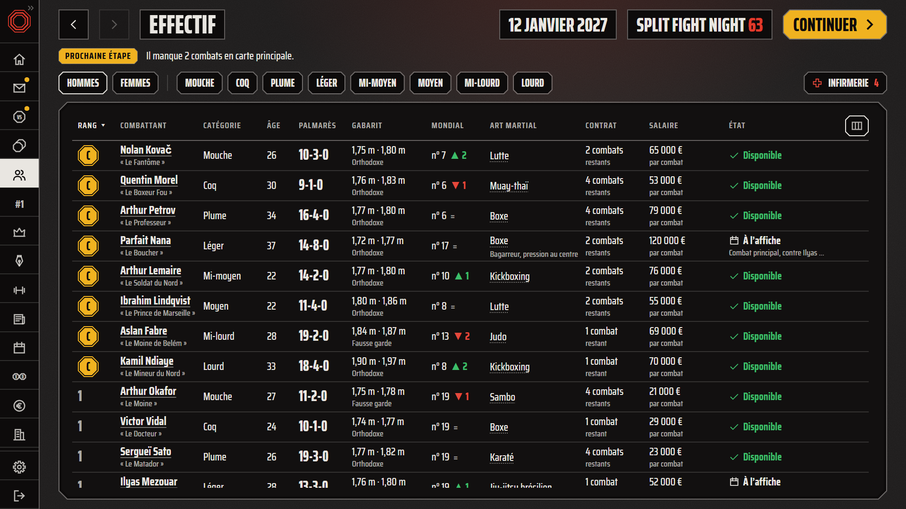
Maquette · barre réduite, nouvelles icônes
Fiche · Statistiques et Combats
Maquette · StatistiquesMaquette · Combats
Fiche · Contrat et Échos
Maquette · ContratMaquette · Échos (ex « On en dit »)
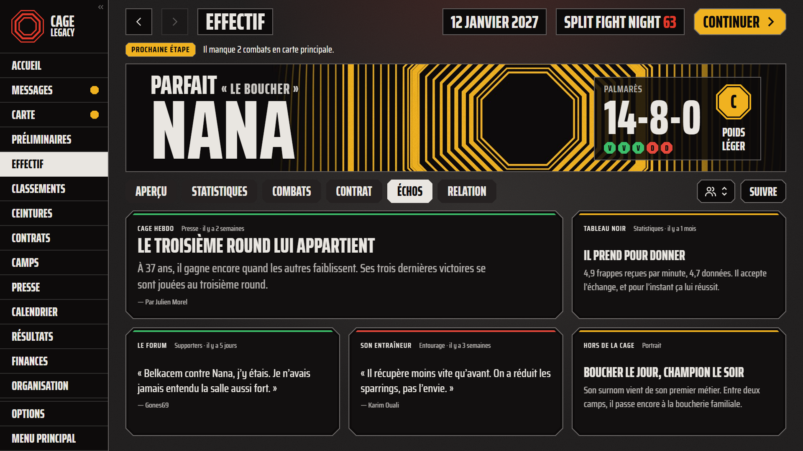
Fiche · Relation et barre réduite
Maquette · RelationMaquette · barre réduite
Messages (R13, R17, T10)
Jeu actuel · Actualités
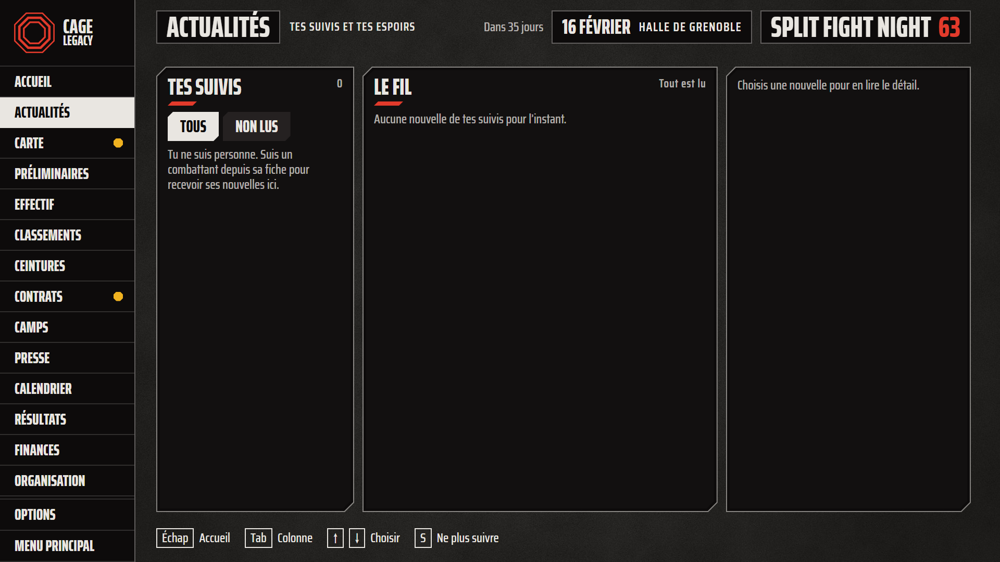
Maquette · index.html?ecran=messages
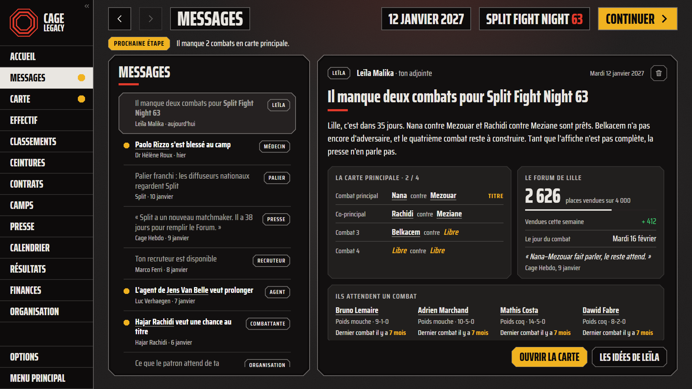
Messages · Continuer s’arrête, puis une réponse donnée
Maquette · Continuer s’arrête sur un message important (?bloque=1)
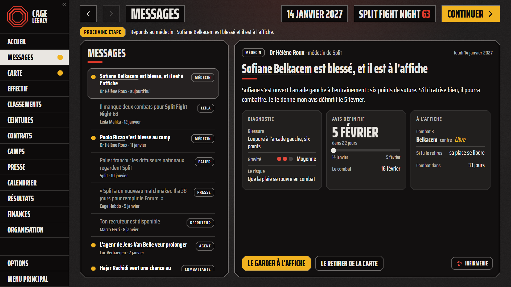
Maquette · une demande acceptée (?msg=rachidi&rep=0)
Messages · une blessure simple, et les idées de Leïla
Maquette · blessure hors affiche : un seul bouton Infirmerie (?msg=rizzo-blesse)
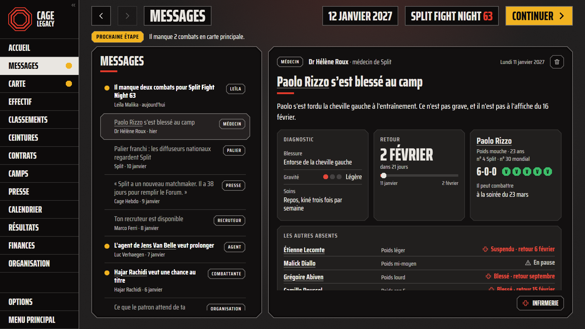
Maquette · les idées de Leïla, cliquables (?msg=leila-carte&idees=1)
Classements · Split (R18)
Jeu actuel · Classement Split, poids légersMaquette · index.html?ecran=classements · onglets sous l’en-tête, sans superposition ; le champion sur le tunnel doré, le n° 1 et le n° 2 sur le tunnel rouge, leur rang dans le logo du jeu ; victoire / défaite et montée / descente en vert / rouge ; chaque ligne a sa forme, son dernier combat et son prochain combat
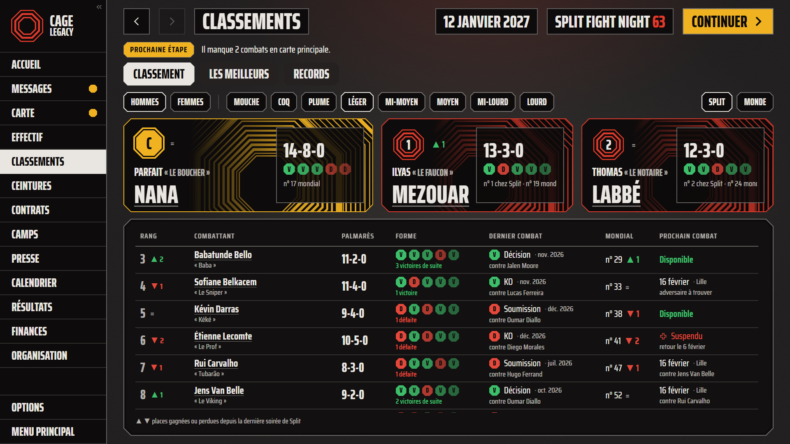
Classements · mondial (R20, Q20b)
Jeu actuel · MondialMaquette · un seul écran, filtre Split / Monde à droite (formule retenue le 09/11) ; « Rang mondial », l’organisation de chacun et ses champions, forme, dernier et prochain combat, surnoms, palmarès à l’échelle des grandes organisations ; les combattants de Split marqués en jaune
Classements · Les meilleurs (R19, Q19a)
Jeu actuel · Les meilleursMaquette · une vitrine : chaque cadre dit ce qu’il mesure, le meilleur en grand, le 2e et le 3e avec leur écart ; hommes / femmes gardés
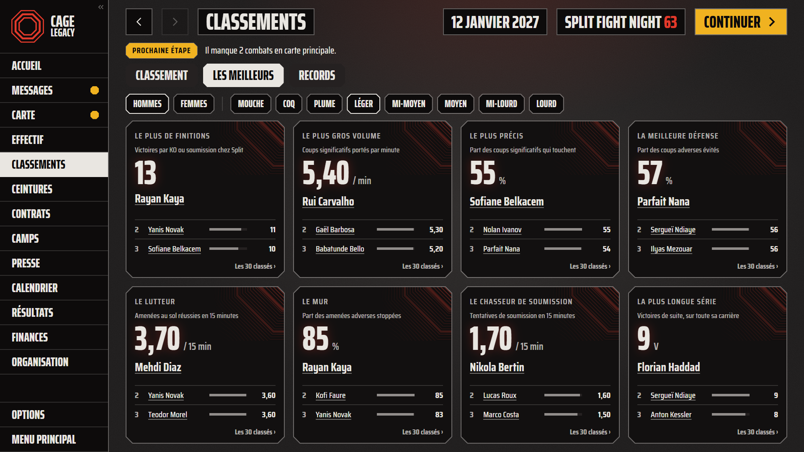
Classements · un cadre ouvre la liste complète (Q19a)
Maquette · « Le plus de finitions » : les 28 classés, un clic sur un nom ouvre la fiche
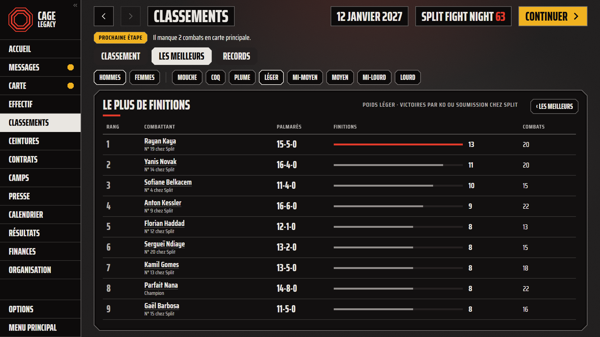
« ‹ Les meilleurs » ramène à la vitrine
Classements · Records (R21, Q21a)
Jeu actuel · Le livre des recordsMaquette · un seul onglet rangé par type ; des valeurs crédibles ; qui, quand, et ce qu’il devient ; les soirées avec leur combat principal
Classements · Hommes ou Femmes : toutes les catégories
Maquette · index.html?ecran=classements&clcat=toutes · un clic sur Hommes (ou Femmes) : les 30 meilleurs, toutes catégories, d’après leur rang mondial ; même chose dans Les meilleursAu mondial, chaque organisation a sa couleur (contour et tunnel), les sept champions sont en tête
Les anciens et les autres organisations
Fiche de staff · un ancien devenu consultante : ce qu’elle fait aujourd’hui, sa carrière, ses records, ce qu’elle peut t’apporterCombattant parti ailleurs · sa fiche prend la couleur de son organisation (Pure Impact), son rang mondial, son organisation dans les infos
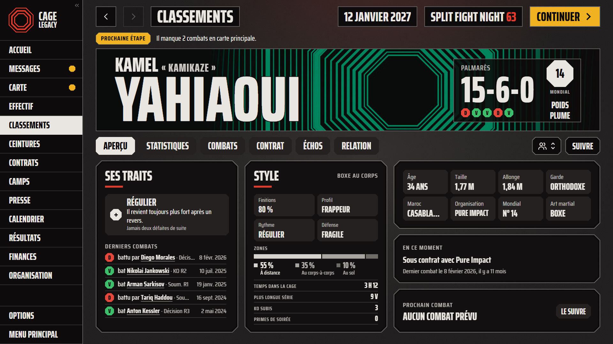
Combattant d’une autre organisation · onglet Contrat
Maquette · sous contrat ailleurs : chiffres estimés, quand il pourra venir, ce qu’il coûterait chez SplitCombats, Échos et Relation parlent aussi de son organisation, plus jamais d’un contrat chez Split
Croquis 1 · Diagonale : la diagonale noir / rouge du jeu, le tunnel en filigrane
Carte principale · index.html?ecran=carte&style=diagonalePréliminaires
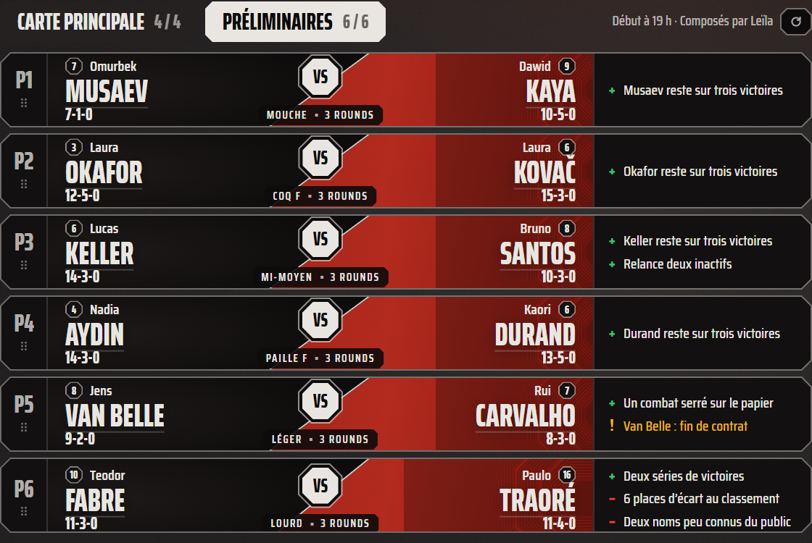
Croquis 2 · Coins : plus de diagonale, un coin blanc et un coin rouge, le VS sur un fil
Carte principale · index.html?ecran=carte&style=coinsPréliminaires
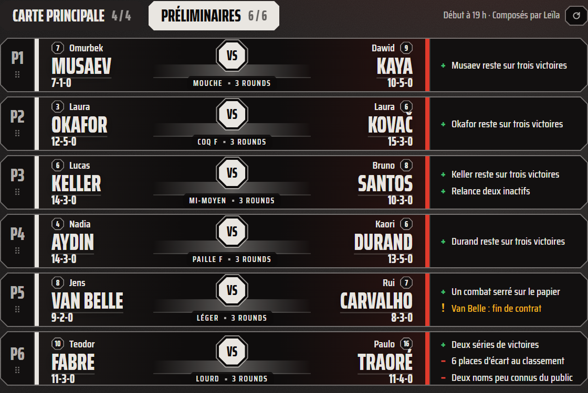
Croquis 3 · Tunnel : la cage du jeu au centre derrière le VS, dorée pour un titre
Carte principale · index.html?ecran=carte&style=tunnelPréliminaires
Carte et préliminaires réunis (R12, R14) · version du 08/11
Jeu actuel · Carte
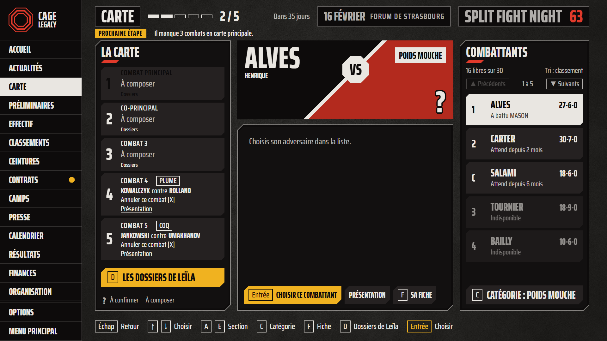
Maquette · onglets Carte principale / Préliminaires en haut, la carte en lignes, les combattants à droite, le bilan et les dossiers de Leïla en bas
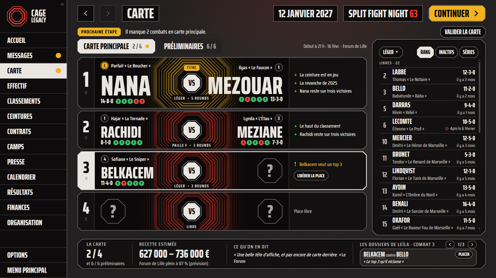
Préliminaires : plus d’écran à part
Jeu actuel · PréliminairesMaquette · onglet Préliminaires, un préliminaire choisi, catégories ouvertes
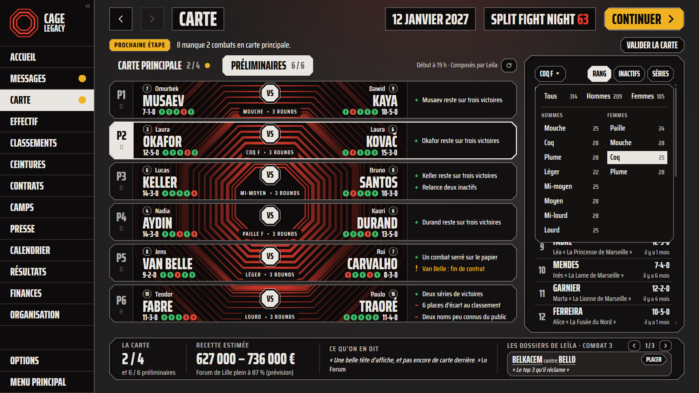
Carte · choisir un adversaire
Maquette · survol d’un combattant : il se pose « pour voir » sur la carte
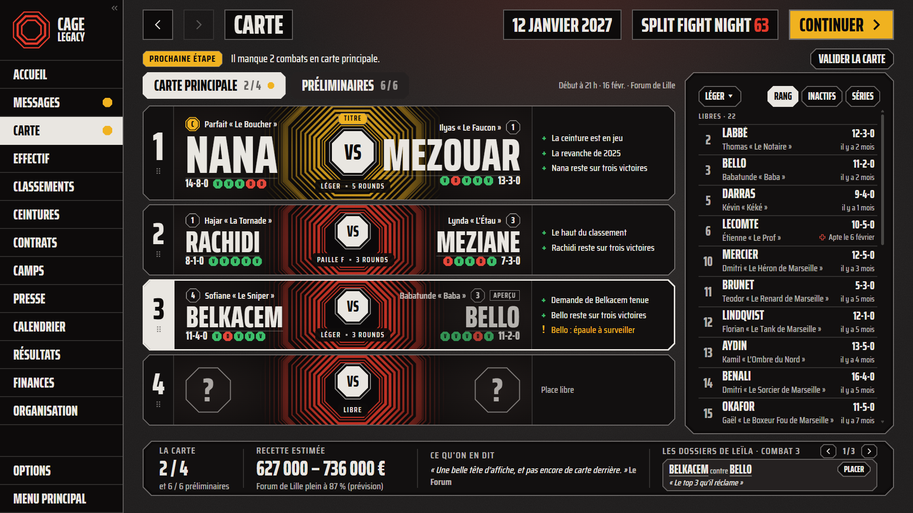
Maquette · glisser-déposer : les places possibles s’allument
Carte · le combat choisi
Maquette · carte complète, onglet « L’enjeu »
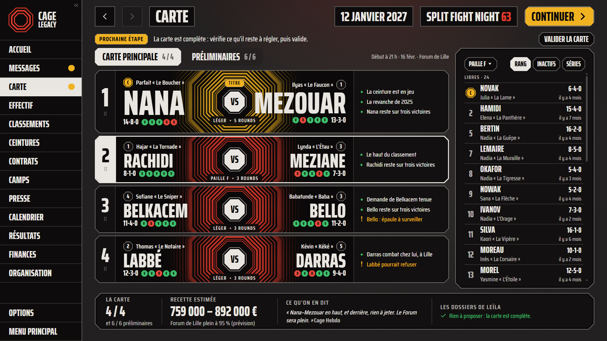
Maquette · onglet « L’enjeu » : ce qui fait le combat, l’histoire, bourses et apport
Carte · place libre et résumé
Maquette · place libre : les dossiers de Leïla en basMaquette · Valider la carte : résumé avant de confirmer
Carte · aucun combat placé
Maquette · carte vide : places libres, la presse le dit, Leïla propose en bas à droiteMaquette · place libre choisie
Carte · retirer un combattant
Maquette · on attrape son nom sur la ligne et on le lâche sur la colonne de droite (Annuler pendant 3 s)Sur la ligne choisie, le bouton « Libérer la place » fait la même chose
Recrutement (R24, R25, Q24) · un seul écran, version 2 du 09/11
Jeu actuel · Contrats › Les libres (un des deux écrans de recrutement)Maquette · index.html?ecran=recrutement · fins de contrat, libérés, vétérans, champions régionaux, espoirs ; « Nouveau » en petit gris après le surnom
Recrutement · le deuxième écran du jeu disparaît
Jeu actuel · Contrats › Recrutement (le doublon de R25, avec « Tu l’as vu »)Maquette · Libres, toutes catégories : un libre que personne n’a vu, « Envoyer le recruteur »
Négociation (Q25a) · ouverture et réponse de l’agent
Maquette · ouverture : l’agent et son caractère, ce qu’il demande sous chaque levier, et ses demandes (il y tient, ça compte, un souhait)Maquette · après une offre : sa réponse dit sur quoi il est d’accord et ce qu’il veut encore face à ton chiffre
Négociation · il réfléchit, puis l’accord
Maquette · ton offre part, l’agent « lit ton offre » (points animés) avant de répondre
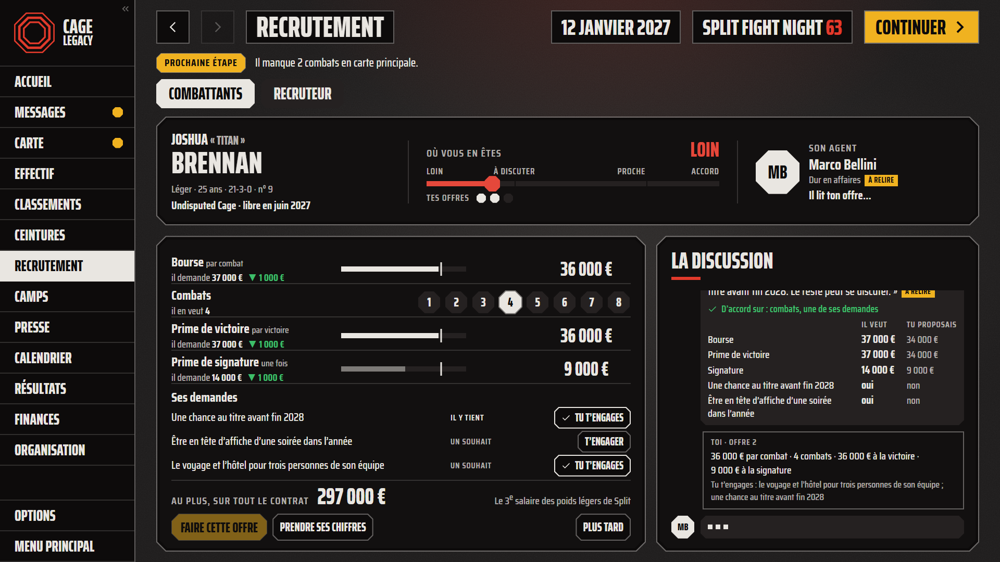
Maquette · accord : il renonce à un souhait (barré), tu t’engages sur une demande qui compte
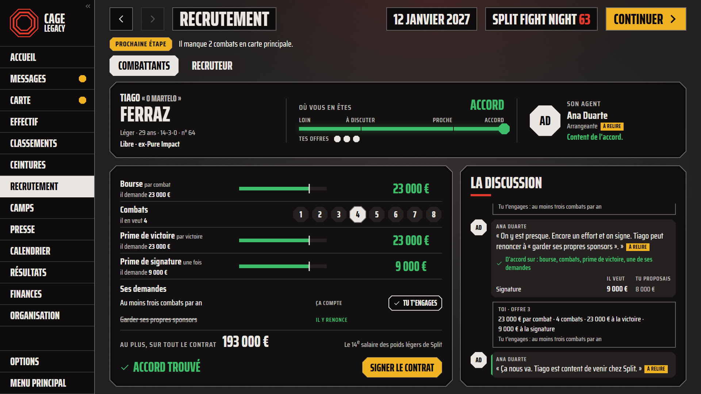
Négociation · confirmation et rupture
Maquette · confirmation en chiffres avant de conclure (charte S6)Maquette · même offre répétée : l’agent ne bouge plus, prévient, puis rompt ; plus d’offre avant deux mois, même en rechargeant
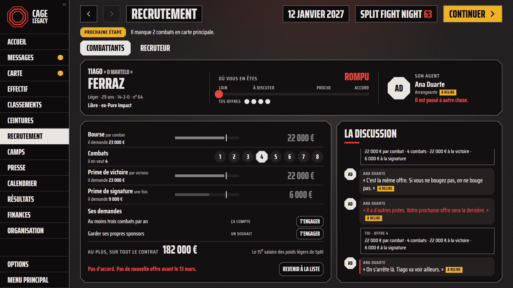
Fiche d’un combattant du marché (Q25b)
Maquette · onglet Contrat : sa situation et ce qu’il demande ; un libre a le tunnel gris
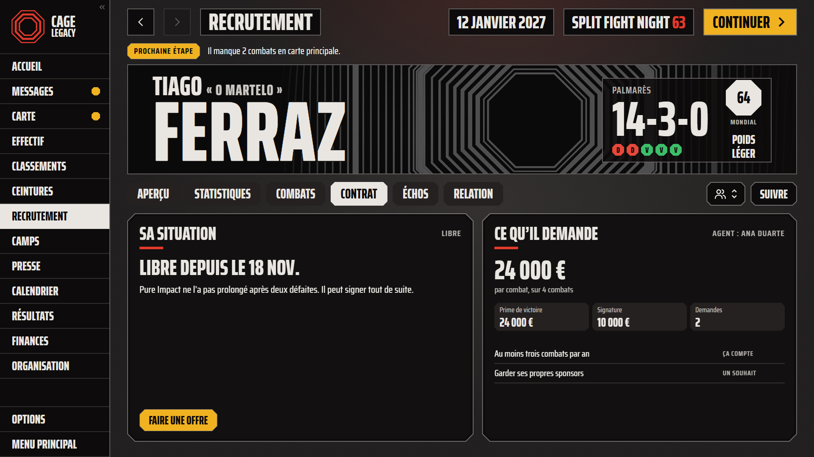
Maquette · Statistiques cachées tant que personne ne l’a vu de près
Recruteur (R26, Q26a à Q26d) · version 8 du 15/11
Jeu actuel · Contrats › Envoyer le recruteurMaquette · index.html?ecran=recruteur · le tableau du marché, un chiffre par case : destination, spécialités (neuf styles communs), distance, billet aller-retour, bourse demandée ; triables. À droite : le pays sur le tunnel du jeu, ses spécialités, le voyage, la bourse demandée en moyenne, la date de retour
Recruteur · trier pour comparer
Maquette · trié par salaires : les pays où les combattants coûtent le moins en hautMaquette · Brésil : billet 870 €, salaire moyen 6 000 €
Le voyage en cours, et l’Accueil
Maquette · Marco est au Brésil : où il en est du voyage, retour, profils, coûtMaquette · Accueil : « En voyage à Rio de Janeiro · Retour le 28 janvier » (validé)
Les messages : le départ, puis les recommandations de Marco (T10)
Maquette · le départ : où, quand, combien de profils, le coût détaillé, ce qu’il va chercherMaquette · le retour arrête Continuer : ses profils dans son ordre, son avis et ce qu’ils demandent, puis « Lire le rapport »
L’écran Rapports · uniquement ce qui sert à recruter
Jeu actuel · Contrats › Ses retours
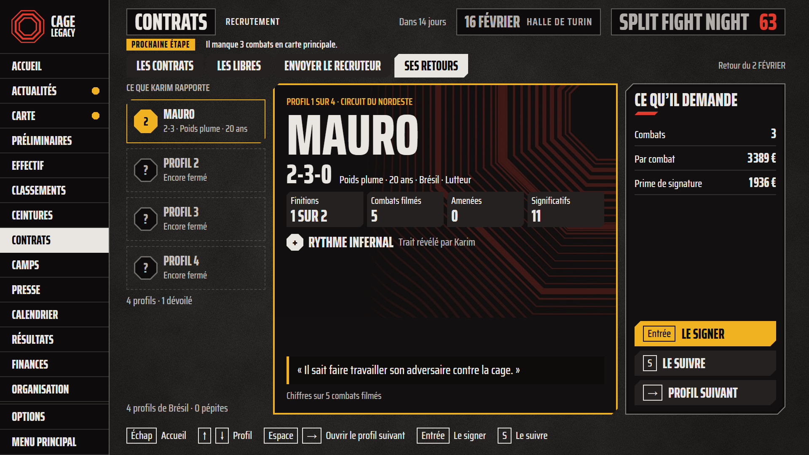
Maquette · plus de bandeau : à gauche le voyage et ses profils ; à droite un seul profil avec l’avis de Marco, trois chiffres (ce qu’il demande, combien de fois Marco l’a vu, son gabarit), ses points forts et ce qu’il faut surveiller. Le reste est sur sa fiche.
Rapports · un faux bon profil, un vieux briscard
Maquette · « Intéressant », 10-0… mais vue une seule fois, et « À surveiller » dit pourquoi : combats courts, adversaires faibles.
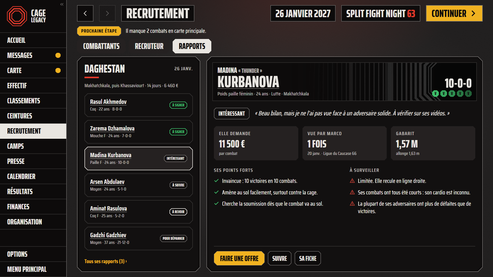
Maquette · « Pour dépanner » : 37 ans, des adversaires solides, deux risques
Rapports · l’underground, et les anciens rapports à part
Maquette · « À revoir » : vue une fois dans une soirée sans licence, des risques
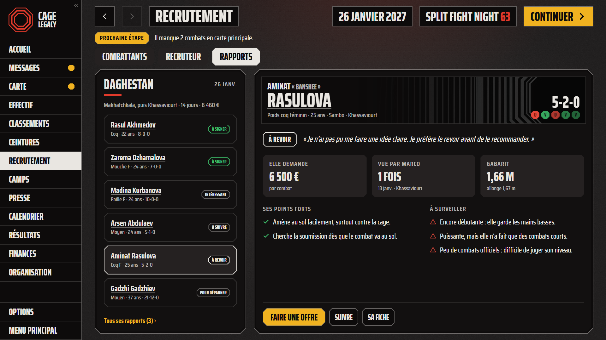
Maquette · « Tous ses rapports » : la colonne de gauche liste les voyages (dont le Kirghizistan, où Musaev a été trouvé) ; un clic ouvre le rapport (date, pays, coût, noms, signés)
La fiche d’un profil (Q25b)
Maquette · sa fiche s’ouvre par-dessus le rapport, statistiques visibles
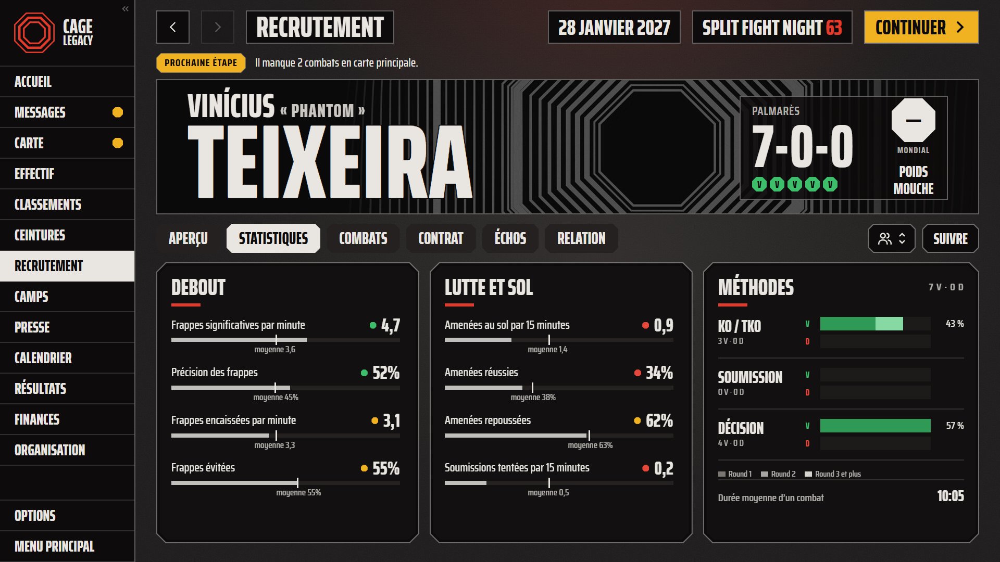
Chaque nom ouvre sa fiche : cartes, frise, dossier, derniers combats (ses adversaires aussi), message
Recruteur · hypothèses prises (à valider)
Prix du voyage : billet aller-retour selon la distance (train pour Paris et Turin, avion ailleurs : 150 € + 0,08 € par km), trajet entre ses deux villes, 280 € par jour (hôtel, repas, voiture, entrées), jours de route compris, et 150 € par jour d’interprète là où Marco ne parle pas la langue. De 950 € (Paris, 3 jours) à 7 640 € (Japon, 14 jours).
Ce que le pays change ensuite : salaires (de 0,5 à 1,4 fois ceux d’un jeune pro français) et coût de chaque combat (son billet et ceux de deux coachs). Le visa n’est plus affiché (retour du 15/11). À RELIRE.
Six parcours, jamais plus de deux pareils dans un voyage : jeune pro invaincu, champion d’un circuit local, venu d’un autre sport, invaincu star du pays (le faux bon profil : un beau bilan contre des adversaires faibles, et il demande plus cher), vieux briscard (34 à 39 ans), underground (peu de combats officiels, beaucoup sans licence).
L’avis de Marco en un mot, neuf possibles : Coup de cœur, À signer, Intéressant, Solide, À suivre, Pas encore prêt, Un pari, À revoir, Pour dépanner. Ses notes sont tirées de ses statistiques face à la moyenne de sa catégorie chez Split (un « À signer » n’a jamais de note faible). Textes factuels, façon rapport de recruteur, À RELIRE.
Régions : Europe de l’Ouest (6), Europe de l’Est et Asie centrale (7), Asie et Océanie (7), Amériques (5), Afrique (5) ; Croatie, Australie et Cameroun ajoutés ; « muay-thaï » au lieu de « boxe thaï », luta livre retirée. Neuf styles communs seulement : boxe anglaise, kickboxing, muay-thaï, karaté, taekwondo, lutte, judo, sambo, jiu-jitsu brésilien, deux ou trois par pays.
La fiche d’un profil ramené : ses traits (Invaincu, Finisseur, Champion local…), « Libre, sans contrat », mondial « — », et l’onglet Relation refait (sa carrière, son entourage, ses objectifs, son bilan année par année).
Le hasard : 2 profils sur 3 dans les spécialités du pays, jamais plus de deux fois le même style ; une pépite a la même chance partout (une par voyage au plus).
Le rapport a son écran (onglet Rapports, octogone jaune tant qu’il n’est pas lu), les anciens rapports sont à part, dans « Ses rapports ». Le message n’est qu’un condensé.
27 destinations, 18 styles, deux salles et une scène par pays, tous les textes : À RELIRE. Recruteur : Marco Ferri, comme dans la maquette Messages.
Résultats (R30, Q30) · chaque combat d’un coup d’œil · cinquième passe du 10/11
Jeu actuel · Résultats après Split Fight Night 63
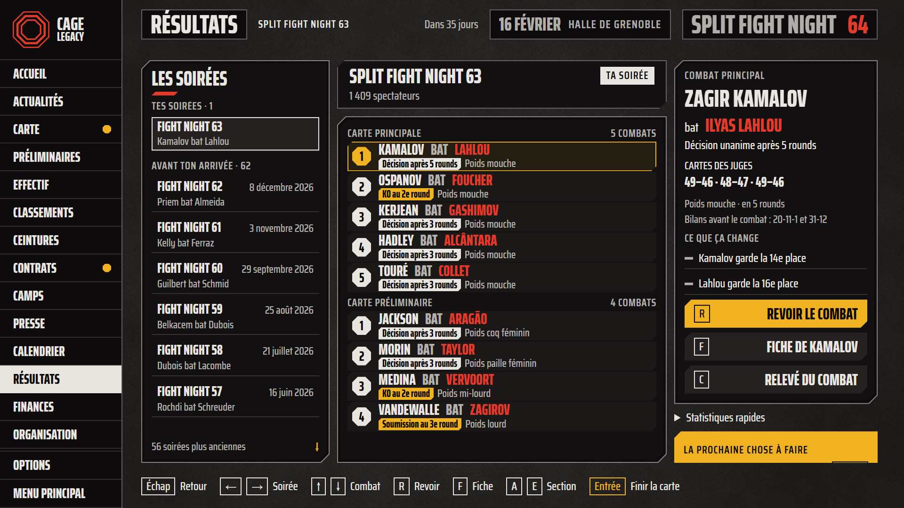
Maquette · index.html?ecran=resultats · vainqueur à gauche, méthode au centre, perdant à droite ; une flèche seulement quand le rang bouge ; catégorie, cartes des juges sous une décision, public dans le bandeau ; les primes en médailles octogonales dorées (éclair = performance, flamme = combat de la soirée, cible = finition) avec le montant
Relevé du combat (R41, Q41) · par-dessus l’écran
Maquette · finition : les juges en tableau (un round par ligne, un juge par colonne, le gagnant du round dans la case), le score et une phrase qui dit qui menait ; les statistiques en tuiles : frappes significatives (tête, corps, jambes), précision en jauges octogonales, amenées au sol et tentatives de soumission en pastilles, temps de contrôle sur la durée du combat, knockdowns ; les frappes significatives round par round en colonnesMaquette · décision partagée : « 2 juges sur 3 donnent la victoire à Rachidi »
Le lendemain (R40, R41, Q40) · refait, dans les Résultats
Jeu actuel · Le lendemain (puis « La suite » sur un deuxième écran)
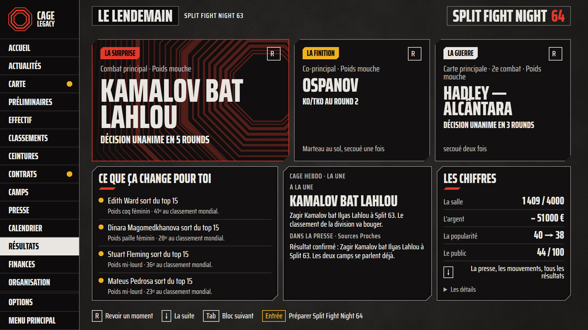
Maquette · onglet « Le lendemain » : trois moments, le classement qui a bougé, la une, deux voix et les vestiaires ; la soirée en chiffres, les primes de chacun, tes blessés ; un seul écran
Le lendemain · ce que remplace la maquette
Jeu actuel · Le lendemain, la suiteMaquette · une soirée d’avant : Split Fight Night 62
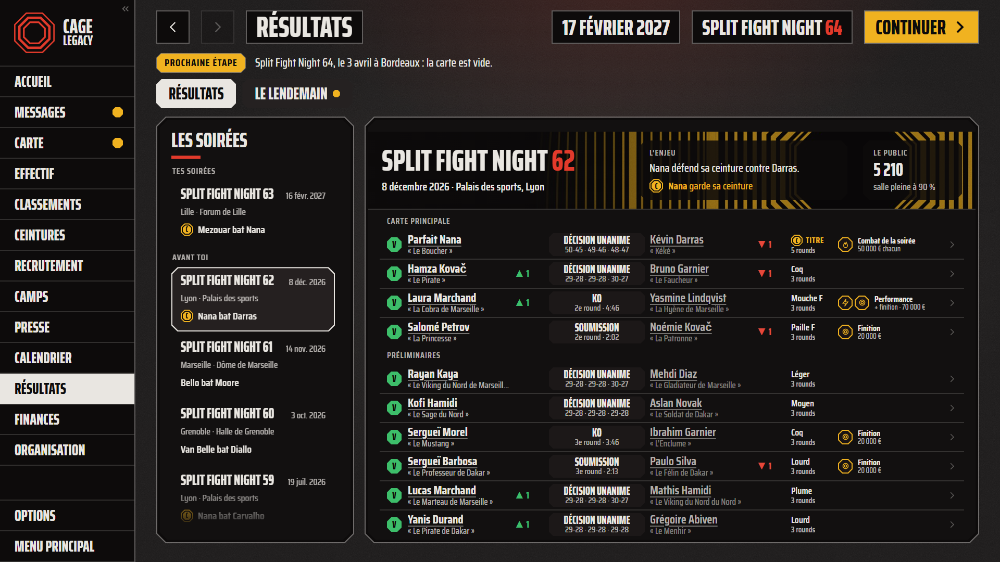
Après la soirée · les autres écrans suivent
Maquette · Classements le 17 février : Mezouar champion, Nana n° 1, ▲ ▼ de la soirée
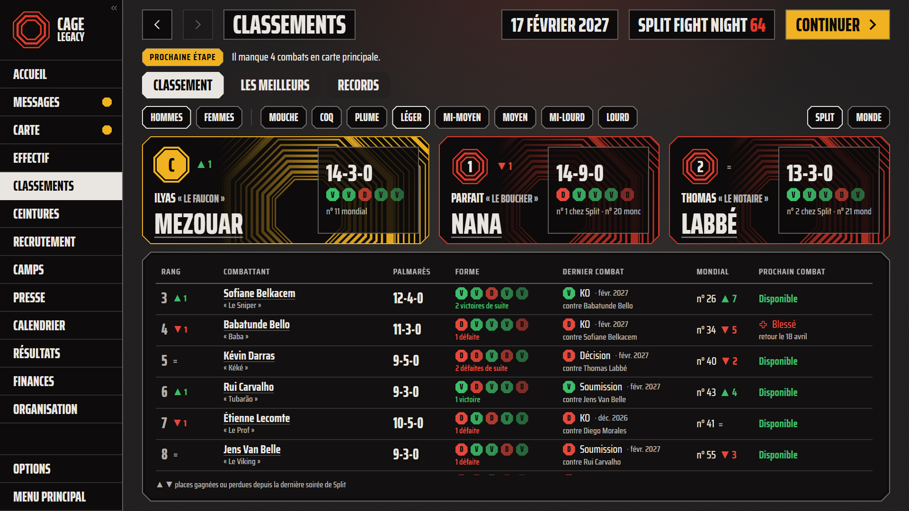
Hypothèses prises (à valider)
Un seul écran Résultats, deux onglets : Résultats et Le lendemain. Le lendemain n’existe que pour la dernière soirée ; il porte l’octogone jaune tant qu’il n’a pas été ouvert.
Résultats inventés pour Split Fight Night 63 (carte complète de la maquette Carte) : Mezouar prend la ceinture à Nana (soumission, 4e round). Juges, coups, primes, suspensions, phrases de presse : à relire.
Le relevé d’un combat s’ouvre par-dessus la liste (règle des panneaux) ; Retour ou un clic à côté le ferme, les flèches passent au combat suivant.
Cartes des juges : le nom du vainqueur de chaque round, puis le score des rounds terminés ; le round de la finition dit « Fini à 3:12 ». Pas de 10-8 montré.
Primes : montants de l’organisation (50 000 / 50 000 / 20 000 €, fiche onglet Contrat). Chaque prime a sa médaille (éclair, flamme, cible) ; la plus rare est écrite en toutes lettres avec le total.
Le lendemain ne montre que les mouvements de la carte principale et ceux de deux places ou plus ; les autres sont dans les Classements (lien en bas).
Les soirées d’avant : le combat principal est écrit à la main, le reste de la carte est tiré au hasard. Au code, les fiches et les résultats devront lire la même source (aujourd’hui la maquette de fiche se contredit, ex. Darras).
Revoir le combat : deux boutons, « dans l’arène » et « le récit » (Q39b). Aucun n’est jaune : le seul bouton jaune de l’écran reste Continuer.
Les chiffres de la soirée (recette, bourses, primes) sont dans le lendemain seulement. La note « Le public 44 / 100 » du jeu est retirée (charte H1).
Le nombre de combats restants au contrat n’est pas décompté après la soirée (Mezouar finirait son contrat : un message à prévoir).
Les statistiques du combat (précision, zones de frappe, amenées au sol, temps de contrôle, soumissions, knockdowns) sont tirées à la graine pour la maquette ; seules les frappes significatives par round sont écrites pour Split Fight Night 63.
Nom des soirées gardé « Split Fight Night 63 », comme les autres maquettes (Q29a reste à appliquer partout en même temps).
Camps (R27, Q27a à Q27c) · septième passe du 15/11 : ce qui bouge, l’entraîneur
Jeu actuel · Camps : 92 salles, une à la fois, en carrousel
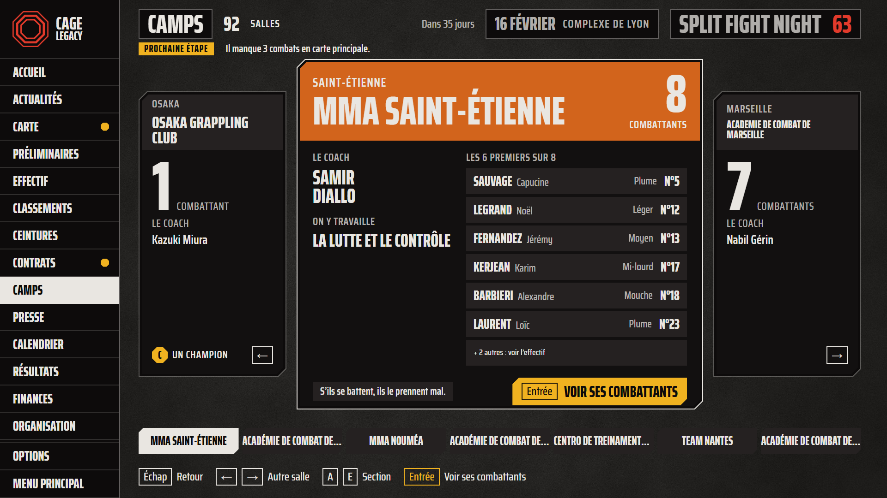
Maquette · index.html?ecran=camps · « Split » : les salles de tes combattants en cartes, en trois rayons (grandes écuries, salles, clubs) ; trois octogones disent la taille, la spécialité est écrite sur chaque carte. Un octogone par combattant (jaune à l’affiche, rouge blessé). Un seul bouton « Rang » (croissant / décroissant) et un menu « Spécialité »
Camps · le menu Spécialité, l’entraîneur, et le monde
Maquette · un clic sur un entraîneur : son âge, depuis quand il dirige la salle, ce qu’il faisait avant (et son bilan s’il a combattu en MMA), son parcours de salle en salle, son équipe (frappe, lutte, jiu-jitsu, préparation physique), sa salle en 2026. Pas de liste de combattantsMaquette · « Le monde » : plus de podium (trop proche des Classements). Ici filtré sur la lutte : les mêmes rayons par taille, le rang sur chaque carte, la spécialité choisie en blanc, trait jaune quand Split y a des combattants. « Envoyer Marco › » mène au Recruteur
Camps · la fiche suit
Maquette · fiche de Paolo Rizzo, onglet Relation : sa salle et son entraîneur viennent de l’écran Camps ; le partenaire « même salle » est vraiment de sa salleHypothèses prises (à valider)
Trois tailles, trois rayons : grande écurie (25 combattants ou plus), salle (8 à 24), club (moins de 8). Les cartes n’ont pas la même taille ; trois octogones (●●● ●● ●) répètent la taille sur chaque carte. Le filtre Toutes / Grandes écuries / Salles / Clubs reste.
Un seul tri : le rang mondial, du n° 1 au dernier ou l’inverse (retour du 15/11), dans chaque rayon. La spécialité se filtre par un menu (huit spécialités, avec le nombre de salles) et s’affiche sur chaque carte. « Tes salles » devient « Split ».
Le monde entier : 240 salles, dont 24 en France (10 %). Les pays pèsent comme dans l’effectif de l’UFC : États-Unis (28 salles), Brésil, Russie devant. Split est la deuxième organisation du monde : un tiers de ses combattants s’entraînent en France, les autres partout (150 salles, 12 combattants de Split au plus dans une salle).
Vérifié avec la vraie vie : un combattant actif fait environ 1,7 combat par an (2014-2025) ; une très grande écurie compte plus de 30 combattants à l’UFC. Dans la maquette : environ 1,3 combat par combattant inscrit (tous ne combattent pas chaque année), et une salle gagne au mieux 6 combats sur 10 (Coral Coast : 38-22). Au plus 5 champions en titre par salle.
Le classement des salles : champions en titre, classés dans le top 15 mondial, taille, bilan 2026. Les grandes écuries sont devant ; une salle moyenne peut entrer dans le top 10 avec plusieurs champions.
Retirés : le tableau, le podium, les sections par lieu (autour de Lyon…), le carrousel, « S’ils se battent, ils le prennent mal », les touches, l’onglet Entraîneurs, les « champions formés ».
L’effet du camp sur la forme existe dans le jeu mais n’est pas affiché (donnée cachée, charte). La plaque reste « Camps » ; le regroupement avec la Presse (T4) n’est pas fait.
Ce qui bouge en 2026 (« progresser, rétrograder, changer de salle ») : une salle peut monter ou descendre d’une taille (« ▲ monte », « ▼ descend » sur la carte, « salle il y a un an, grande écurie aujourd’hui (22 → 27 combattants) » dans le panneau), 28 salles l’ont fait ; 56 combattants de Split ont changé de salle (arrivées et départs datés, noms et salles cliquables) ; 13 salles ont changé d’entraîneur (l’ancien part adjoint ailleurs).
Une statistique par spécialité, différente pour chacune : amenées au sol (lutte), victoires par soumission (jiu-jitsu brésilien), précision à la tête (boxe anglaise), coups de pied (kickboxing), frappes au clinch (muay-thaï), clés de jambe (sambo), projections (judo), frappes encaissées (karaté). Un clic sur l’étiquette de la carte l’ouvre à la place du milieu de la carte, avec une jauge face à la moyenne (rien ne se superpose) ; le panneau la montre toujours.
L’entraîneur est souligné partout et ouvre son portrait dans le panneau (Retour, ou le nom de la salle, revient à la salle). L’équipe dépend de la taille : quatre adjoints dans une grande écurie, trois dans une salle, zéro ou un dans un club. Pas encore de vraie fiche d’entraîneur.
Rang : en décroissant, les rayons s’inversent aussi (les clubs d’abord) et la liste revient en haut ; c’était le bug signalé (la liste sautait vers la salle choisie).
Noms de salles et d’entraîneurs, années, statistiques et mouvements : inventés, à relire.
Finances (R31, Q31) · deuxième passe du 15/11 : la caisse
Jeu actuel · six cartes en grande partie videsMaquette · index.html?ecran=finances · « La caisse » : la caisse sur le tunnel, le solde en escalier (une marche par soirée, verte si elle rapporte), une case par soirée, et le détail de la soirée choisie : recettes, dépenses, ce qu’il te reste, et ce qui a changé depuis la soirée d’avant, avec la raison
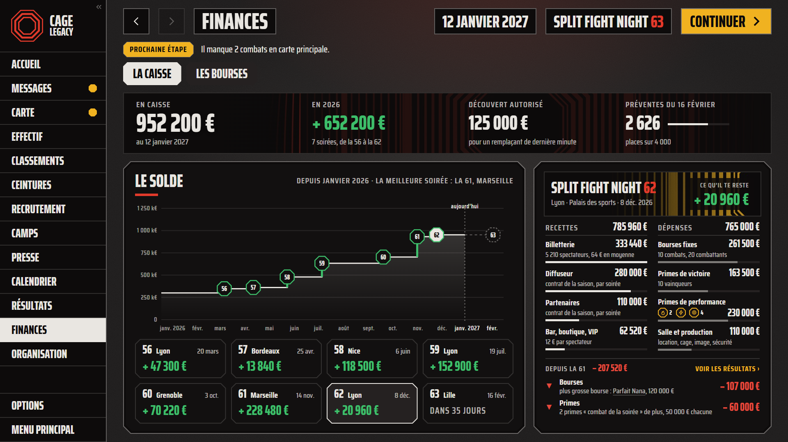
Finances · une soirée qui rapporte peu, et la soirée à venir
Maquette · Split Fight Night 57 (Bordeaux) : 2 780 spectateurs de moins qu’à Lyon, mais pas de Nana à payer
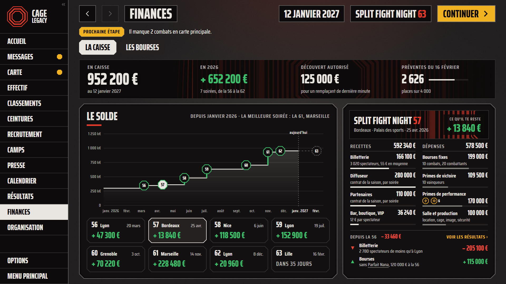
Maquette · Split Fight Night 63, à venir : seulement ce qui est déjà signé ou vendu (les préventes avancent avec Continuer), tes primes et « Modifier ›»
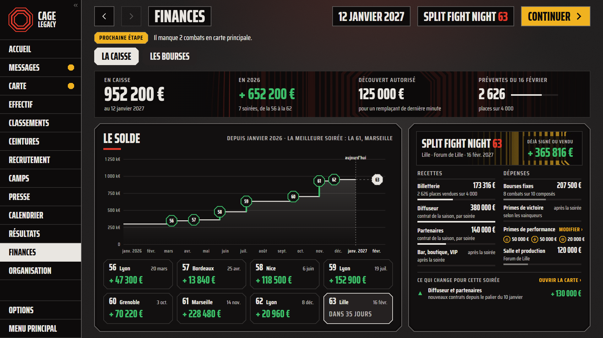
Finances · après la soirée, et les bourses
Maquette · ?apres=1 : le 17 février, la 63 reprend les chiffres du Lendemain (846 000 € de recette, 345 000 € de bourses, 320 000 € de primes, 120 000 € de salle : + 61 000 €)Maquette · « Les bourses » : une carte par catégorie (bourse moyenne, ce qu’elle a coûté en 2026, la bourse la plus haute), de la plus légère à la plus lourde, sans bouton de tri ; filtre Hommes / Femmes ; à droite ses combats de 2026, les plus hautes bourses et les fins de contrat avec « Prolonger ›»
Finances · Femmes, et Prolonger
Maquette · Femmes : quatre grandes cartes, le chiffre à gauche, le détail à droite ; le filtre est gardé au retour
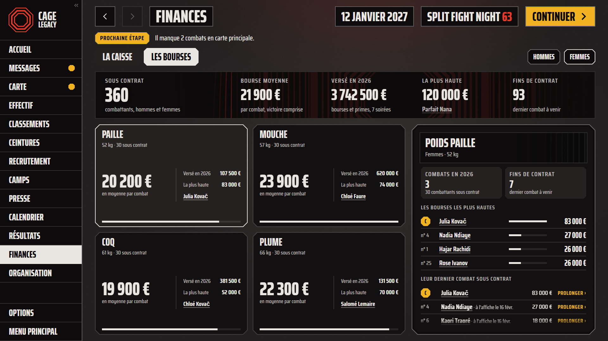
Maquette · « Prolonger › » ouvre la fiche sur l’onglet Contrat ; Retour revient aux Finances, dans le même état
Finances · hypothèses prises (à valider)
Date : 12 janvier 2027, la 63 est à venir (on n’en montre que le signé et le vendu, aucune prévision). Ses chiffres du Lendemain n’apparaissent qu’après la soirée (?apres=1).
Recettes : le jeu n’a que billetterie et diffuseur. J’ai ajouté partenaires et bar, boutique, VIP (la recette du Lendemain, 846 000 €, ne s’explique pas sans eux). À garder ou non.
Pas de frais fixes (bureau, salariés, assurance) : ils n’existent pas dans le jeu, donc la caisse ne bouge qu’aux soirées. C’est pour ça que Split gagne de l’argent à chaque soirée ; dans la vraie vie, beaucoup d’organisations de ce niveau en perdent. À trancher.
Diffuseur : 280 000 € par soirée en 2026, 380 000 € depuis le palier du 10 janvier (message « les diffuseurs nationaux regardent Split ») ; partenaires 110 000 € puis 140 000 €. Aucun montant public n’existe en France (Canal+ pour Ares, RMC Sport pour Hexagone) : ordre de grandeur inventé.
Billet moyen 52 à 66 € selon la ville (UFC Paris 2022 : 3,4 M€ pour 15 405 places, ≈ 220 € ; une organisation de niveau 2 vend bien moins cher). Bar, boutique et VIP : 12 € par spectateur.
Bourses : celles des contrats de l’Effectif (moitié fixe, moitié à la victoire, comme l’onglet Contrat). Un adversaire hors de Split reçoit 14 000 € (30 000 € en combat principal). Ordres de grandeur : Bellator 2023, 3 000 + 3 000 $ en préliminaires, 50 000 + 50 000 $ en tête d’affiche.
Primes : 50 000 / 50 000 / 20 000 € (montants de la fiche). Elles pèsent 150 000 à 320 000 € par soirée, souvent plus que la salle : c’est généreux pour ce niveau (l’UFC donne 50 000 $). Le joueur les fixe (R39).
Salle et production : 95 000 à 130 000 € (location, cage, image, sécurité), 120 000 € à Lille comme au Lendemain. Pas de tarif public trouvé.
Caisse au 1er janvier 2026 : 300 000 €. Découvert autorisé : la règle du jeu (dernière recette nette lissée sur deux soirées).
Ce qui a changé : les deux plus gros écarts avec la soirée d’avant, en effet sur ce qu’il te reste, avec leur raison (public, Nana à l’affiche ou non, primes, salle, nouveau contrat).
Vérifié : chaque soirée, recettes moins dépenses = ce qu’il te reste ; la somme des catégories = le versé de 2026 (3 742 500 €) ; Nana combat à la 56, la 59 et la 62, comme ses primes dans la fiche. Écart repéré dans les Résultats (pas corrigé ici) : l’Effectif date le dernier combat de 53 combattants au 8 déc. 2026 (dont Mezouar, Lecomte, Rachidi, Meziane), mais la carte de la 62 ne les contient pas : les dates générées « au 8 du mois » ne suivent pas les cartes des soirées. À reprendre dans l’Effectif ou les Résultats, pas dans les Finances.
Courbe : une seule, en escalier, sans prévision. Les cases des soirées vont de la plus ancienne à la plus récente, dans le sens de la courbe (la règle « du plus récent au plus ancien » vaut pour la série V / D).
Les bourses : « Versé en 2026 » vient des mêmes soirées que la caisse ; pas d’historique des salaires (rien dans le jeu ne dit ce qu’ils étaient avant) ; ce qui bouge est montré dans « La caisse ». Le budget n’est jamais imposé (Q31).